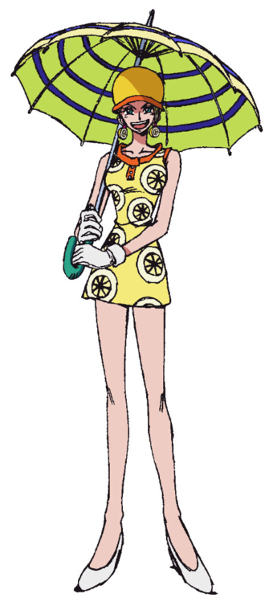
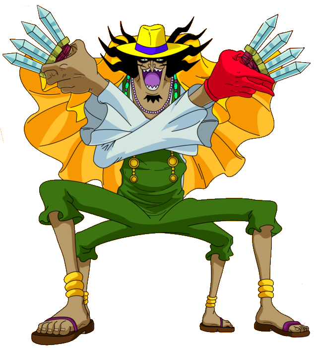
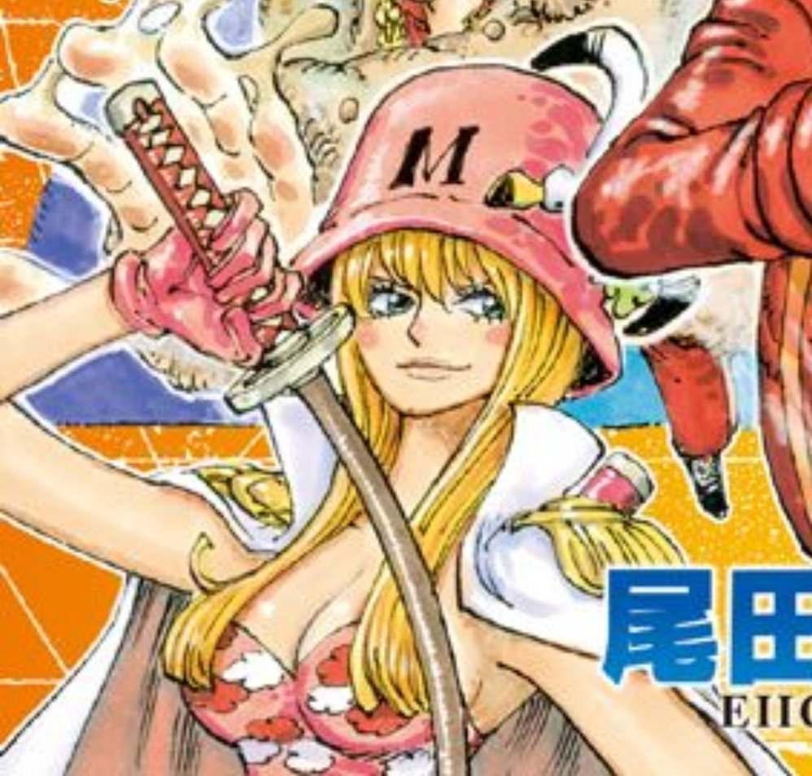
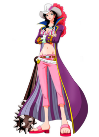
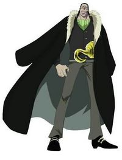
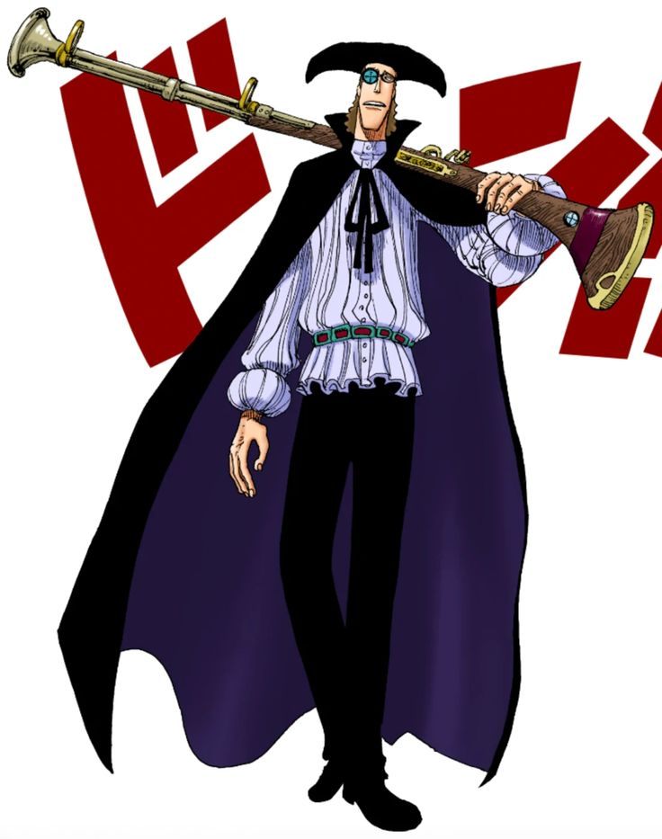

As akuma no mi são frutas misteriosas que existem no mundo de One Piece, um mangá e anime criado por Eiichiro Oda. Essas frutas concedem poderes especiais aos seus consumidores, que são chamados de usuários de akuma no mi. No entanto, elas também trazem uma grande desvantagem: os usuários perdem a capacidade de nadar e se tornam vulneráveis à água do mar e a certos materiais, como o kairoseki.
As akuma no mi são classificadas em três tipos principais: Paramecia, Zoan e Logia. As frutas do tipo Paramecia alteram as características do corpo ou do ambiente do usuário, como a. As frutas do tipo Zoan permitem ao usuário se transformar em um animal ou em uma forma híbrida, como a. As frutas do tipo Logia permitem ao usuário se transformar em um elemento natural ou uma força da natureza.

Neste livro, você vai encontrar uma lista completa e atualizada de todas as akuma no mi que apareceram ou foram mencionadas no mangá e no anime de One Piece até o momento. Você vai conhecer os nomes, os tipos, os poderes e os usuários de cada uma dessas frutas, além de curiosidades e informações adicionais. Este livro é um guia indispensável para os fãs de One Piece que querem saber mais sobre as akuma no mi e o universo criado por Eiichiro Oda.
Ato Ato no Mi (Fruta da Arte) se trata de uma Akuma no Mi do tipo Paramecia que dá ao seu usuário o poder de transformar pessoas e objetos em arte distorcendo a realidade ao seu redor através da criação e controle de nuvens de pensamento, e depois, lançando-a no alvo, assim criando uma explosão que distorce tudo e todos naquela área.. Podendo reveter o efeito caso queira. O usuário ao perder a consciência tem tudo e todos que foram transformados em arte voltando ao sua forma natural.
Sua usuária é a Jora, membra dos piratas Donquixote.
Awa Awa no Mi (Fruta da Bolha) é uma Akuma No Mi do tipo Paramecia que permite ao seu usuário criar e manipular bolhas de sabão à vontade, que não só limpam a sujeira, como também "limpa" a força dos seus adversários enfraquecendo-os. No entanto, caso tenham contato com água, os adversários enfraquecidos retornam a sua forma original e recuperam sua força.
Sua usuária é Kalifa, ex membra da Cipher Pol 9 e atualmente membra da Cipher Pol 0.
Baku Baku no Mi (Fruta da Mastigação) é uma Akuma no Mi do tipo Paramecia que permite ao seu usuário a capacidade de comer qualquer coisa menos kairoseki. Os itens comidos podem ser assimilados ao corpo do usuário criando armas ou outras coisas. Podendo também fundir outras pessoas ao seu corpo "comendo-as".
Seu usuário é Wapol, ex rei de Drum.
Bane Bane no Mi (Fruta da Mola) é uma Akuma no Mi do tipo Paramecia que permite ao usuário transformar seus membros em molas. Ao transformar suas pernas em molas, o usuário é capaz de realizar saltos enormes, adquirindo mais velocidade e força de impacto durante os saltos.
Seu usuário é Bellamy, um ex pirata e atualmente pintor de bandeiras piratas.
Bara Bara no Mi (Fruta dos Pedaços) é uma Akuma no Mi do tipo Paramecia que permite seu usuário dividir seu corpo em várias partes, o fazendo se tornar imune a cortes de espadas. As partes do corpo do usuário podem flutuar portanto que seus pés estejam no chão e dentro de uma área delimitada ao redor do corpo do usuário.
Seu usuário é Buggy, um pirata ex tripulante da tripulação do Rei dos Piratas e atualmente um dos quatro Yonko (Imperador do Mar).
Bari Bari no Mi (Fruta da Barreira) é uma Akuma no Mi do tipo Paramecia que dá ao seu usuário a habilidade de criar barreiras ditas como serem indestrutivéis. Sendo considerada a Akuma no Mi com maior potencial defensivo, podendo também serem usadas de forma ofensiiva, devido á duressa das barreiras.
Seu usuário foi anteriormente Kurozumi Semimaru e atualmente seu usuário é o pirata e comandante da grande frota dos Chapéus de Palha, Bartolomeo.
Bata Bata no Mi (Fruta da Manteiga) é uma Akuma no Mi do tipo Paramecia que dá ao seu usuário a capacidade criar e manipular manteiga. A manteiga sendo pegajosa acaba podendo ser utlizada para imobilizar seus oponentes.
Sua usuária é atualmente a charlotte Galette, uma pirata e 18º filha da ex Yonko Charlotte Linlin, atuando como Ministra da Manteiga em Totto Land.
Beri Beri no Mi ou Berry Berry no Mi (Fruta das Bagas) é uma Akuma no Mi do tipo Paramecia que permite seu usuário dividir seu corpo em diversas esferas (semelhante à habilidade da Bara Bara no Mi, porém dita como mais fraca do que esta citada). As partes esferas divididas pelo usuário podem flutuar e serem controladas a sua vontade.
Seu usuário atualmente é o marinheiro Very Good.
Beta Beta no Mi (Fruta do Muco) é uma Akuma no Mi do tipo Paramecia que permite seu usuário criar e manipular um muco pegajoso podendo prender seus oponentes, além do muco ser extremamente explosivo.
Seu usuário atualmente é Trebol, um pirata e membro e um dos comandantes dos piratas Donquixote.
Bisu Bisu no Mi (Fruta do Biscoito) é uma Akuma no Mi do tipo Paramecia que dá ao seu usuário o poder de criar e controlar biscoitos de forma ilimitada, podendo ser manipulados para criar guerreiros feitos de biscoito por exemplo, os mesmos possuindo uma grande durabilidade. No entanto, caso sejam molhados com algum tipo de líquido os biscoitos ficarão moles e perderão a durabilidade.
Seu usuário atualmente é Charlotte Cracker, um pirata e 15 º filho da ex Yonko Charlotte Linlin sendo um dos seus três generais doces e atuando como o ministro do biscoito.
Bomu Bomu no Mi (Fruta da Bomba) é uma Akuma no Mi do tipo Paramecia que permite seu usuário explodir qualquer parte do seu corpo como uma bomba, até mesmo seu cabelo, mucos e respiração podem se tornar explosivos, além de tornar seu usuário totalmente imune à suas próprias explosões.
Seu usuário atualmente é Gem, um ex membro da organização criminosa liderada por Crocodile, um ex shichibukai (Sete Lordes do Mar). Chamada de Baroque Works, atuando como um oficial de menor ranking e utilizando do codinome "Mr.5". Atualmente trabalha como bombeiro no Spiders Cafe.
Buki Buki no Mi (Fruta das Armas) é uma Akuma no Mi do tipo Paramecia que á ao usuário a capacidade de mudar suas partes do corpo em qualquer tipo de armas sejam armas brancas ou armas de fogo, se tornando uma verdadeira arma humana
Sua usuária é Baby 5 (seu verdadeiro nome ainda não foi revelado), ex assassina e ex oficial dos piratas Donquixote e atualmente casada com Sai, o 13º líder da Armada Happo e um dos comandantes da Grande Frota dos Chapéus de Palha.
Buku Buku no Mi (Fruta dos Livros) se trata de uma Akuma no Mi do tipo Paramecia que permite seu usuário manipular livros à vontade através de telesinesia, podendo também tornar "real" ambientes presentes nos livros e possibilitando prender seus inimigos nestes ambientes. O usuario pode usar os livros para voar enquanto estiver em cima deles.
Seu usuário atualmente é Charlotte Mont-d'Or, um pirata e 19º filho de Charlotte Linlin.
Chiyu Chiyu no Mi (Fruta da Cura) é uma Akuma no Mi do tipo Paramecia ue concede ao usuário a capacidade de curar qualquer ferido através do uso de líquidos que venham do corpo do usuário como lágrimas por exemplo. Ao tocar algum ser vivo que esteja ferido, a lágrima o restaura para a saúde perfeita e pode até mesmo recuperar pessoas que tem feridas letais, porém, essa cura não é capaz de reconstruir membros perdidos.
Sua usuária é Mansherry, uma Tontatta e filha do rei dos Tontattas Gancho.
Choki Choki no Mi (Fruta da Tessoura) é uma Akuma no Mi do tipo Paramecia que permite ao usuário transformar seus braços e pernas em tesouras, podendo cortar as coisas como se fossem feitas de papel, além de poder manipular aquilo que foi cortado como se fosse realmente um papel, moldando-os para criar escadas e rampas por exemplo.

Seu usuário atualmente é Inazuma, um newkama e membro do exército revolucionário.
Deka Deka no Mi (Fruta da Gigantificação) é uma Akuma no Mi do tipo Paramecia que permite seu usuário modificar seu tamanho, podendo se tornar um humano gigantesco.
Seu usuário é Sanjuan Wolf, conhecido também como o "Navio de Batalha Colossal". Foi um criminoso condenado à prissão perpétua no nível 6 de Impel Down,atualmente é membro dos piratas do Barba Negra sendo um dos seus Dez Capitães Colossais, sendo o capitão do 7º navio dessa frota.
Doa Doa no Mi (Fruta da Porta) se trata de uma Akuma no Mi do tipo Paramecia que concede ao seu usuário criar portas em qualquer superfície e até seres vivos que o usuário tocar, podendo criar portas a partir de seu próprio corpo, essas portas podem ser utlizadas normalmente por outras pessoas. Dependendo de onde a porta for criada, o usuário pode acessar uma dimensão própria, onde ele pode enxergar as pessoas, mas não ser enxergado por elas.

Seu usuário atualmente é Blueno, ex membro da Cipher Pol 9 e atualmente membro da Cipher Pol 0.
Doku Doku no Mi (Fruta do Veneno) é uma Akuma no Mi do tipo Paramecia que concede ao seu usuário criar e controlar diversos tipos de venenos, sejam líquidos ou gasosos, além de tornar imune a todos os tipos de veneno. Podendo manipular o veneno criado para formar criaturas feitas de puro veneno, tais como Hidras e até Demônios de veneno.
Seu usuário é Magellan (também conhecido como Magalhães) e o ex diretor de Impel Down e atualmente o vice-diretor.
Doru Doru no Mi (Fruta da Cera) é uma Akuma no Mi do tipo Paramecia que permite que seu usuário crie cera a partir de seu corpo e a manipule como queira. A cera criada quando endurecida se torna extremamente dura e resistente sendo ussada para prender seus inimigos.
Seu usuário atualmente é Galdino, pirata e ex membro da Baroque Works atuando como Mr.3 e atualmente membro da Cross Gild (tripulação do Yonko Buggy juntamente de Crocodile e Mihawk).
Fude Fude no Mi (Fruta da Tinta) é uma Akuma no Mi de tipo Paramecia que permite ao seu usuário criar tinta a partir de pincéis ou de outras extensões. Ao utilizar a tinta criada para desenhar, o que for desenhado ganha vida, fazendo-as assumir uam forma tridimensional como se fossem de fato reais.
Seu usuário foi Kurozumi Kanjuro também conhecido como "Chuva da Tarde". Kanjuro foi um samurai do País de Wano, sendo um dos Nove Bainhas Vermelhas (sendo originalmente um espião da família Kurozumi e infiltrado nos Bainhas Vermelhas e no clã Kozuki). Após sua morte sua fruta renasceu em outro local.
Fuku Fuku no Mi (Fruta das Vestimentas) é uma Akuma no Mi do tipo Paramecia que permite que seu usuário criar roupas e trajes para si e para outras pessoas através de folhas e pedras. Ao colocar uma folha ou uma pedra em cima da cabeça de alguém, o usuário pode transforma-las em roupas.
Seu usuário é Kin'emon, um samurai do País de Wano, retentor do clã Kozuki e membro dos Nove Bainhas Vermelhas.
Gabu Gabu no Mi (Fruta do Álcool) é uma Akuma no Mi do tipo Paramecia que permite o seu usuário manipular álcool livremente, podendo produzir chamas devido ao álcool ser uma substância inflamável.
Seu usuário é Vasco Shot, pirata membro dos Piratas do Barba Negra, sendo um de seus Dez capitães Colossais e capitão do 8° navio.
Gasu Gasu no Mi (Fruta do Gás) é uma Akuma no Mi do tipo Logia que permite ao seu usuário criar, manipular e transformar seu corpo em gás, sendo intangível a ataques sem Haki. Essa fruta permite total manipulação de todo e qualquer tipo de gás. Seu usuário pode remover o oxigênio de uma área, criar gases venenosos, inflamáveis e explosivos. Por ter o corpo feito de gás, o usuário pode flutuar e até passar por lugares que uma pessoa comum não conseguiria, ao aumentar a densidade do seu corpo de gás, o usuário pode interagir com objetos e seres vivos, podendo pega-los e etc.
Seu usuário é Caesar Clown, um cientista e ex membro dos "Mads", também sendo um ex colega de Vegapunk.
Giro Giro no Mi (Fruta da Visão) é uma Akuma no Mi do tipo Paramecia que concede ao seu usuário a habilidade de ver através de tudo, enxergar pessoas e objetos à longas distâncias e permitindo que seu usuário possa ver até mesmo dentro da mente das pessoas.
Sua usuária é Viola, ou Violet como também é conhecida. Viola é filha do Rei de Dressrosa o rei Riku Doldo III, sendo a princessa do reino de Dressrosa.
Gocha Gocha no Mi (Fruta da Fusão) é uma Akuma no Mi do tipo Paramecia que permite que seu usuário se funda com outras pessoas, se tornando um único ser.
Seu usuário é Charlotte Newshi, um dos filhos da Charlotte Linlin.
Goro Goro no Mi (Fruta do Trovão) é uma Akuma no Mi do tipo Logia que permite ao seu usuário criar, manipular e transformar seu corpo em eletricidade pura. O corpo do usuário se torna intangível devido ao fato de ser feito de eletricidade, o permitindo se mover em alta velocidade, passar por materiais sólidos ao se transformar em uma corrente elétrica. Sendo capaz de gerar descargas elétricas de até 200 milhões de Volts.
Seu usuário é God Enel, o ex Deus de Skypiea (ao tomar o trono de Gan Fall que era o antigo governante), Enel era antes habitante de Birka, sendo o próprio Enel o responsável pela destruição de sua terra natal usando os poderes da Goro Goro no Mi.
Gunyo Gunyo no Mi (Fruta da Argila) se trata de uma Akuma no Mi de tipo ainda desconhecido que permite ao seu portador a capacidade de criar e manipular argila à vontade, podendo criar golens de argila.
Seu usuário é Prince Grus, um marinheiro da patente de Contra-Almirante atuante na base G-14 da Marinha. Sendo também um membro da Sword.
Gura Gura no Mi (Fruta do Tremor) é uma Akuma no Mi do tipo Paramecia que permite que seu usuário crie vibrações sísmicas, podendo gerar terremotos, maremotos, tsunamis e ciclones, tornando seu usuário uma placa tectônica viva. Por ter uma capacidade extremamente destrutiva, a Gura Gura no Mi é considerada a Fruta Paramecia mais poderosa e considerada também como a fruta capaz de destruir o mundo.
Seu usuário anteriormente foi o Ex Yonko Edward Newgate (o Barba Branca) e após sua morte, o atual Yonko Marshall. D. Teach (Barba Negra) roubou seu poder para si.
Guru Guru no Mi (Fruta da Rotação) é uma Ajuda no mi de tipo Paramecia que concede ao seu usuário a habilidade de transformar partes de seu corpo em hélices, dando-o capacidade de vôo e lhe concedendo alta velocidade.
Seu usuário é Buffalo, um combatente dos Piratas Donquixote, sendo um oficial do Exército Pica.
Hana Hana no Mi (Fruta da Flor) é uma Akuma no Mi tipo Paramecia que permite ao seu usuário fazer florescer duplicatas de partes do seu corpo em qualquer superfície ou até em outros seres vivos, o usuario pode fazer florescer seus membros em um tamanho muito maior do que os de seu corpo original, porém, todo o dano causado aos membros florescidos são refletidos no corpo original de seu usuario.

Sua usuária é Nico Robin, uma pirata membra dos Piratas do Chapéu de Palha, sendo a arqueóloga do bando.
Hebi Hebi no Mi, Modelo Anaconda (Fruta da Serpente modelo Anaconda) é uma Akuma no Mi do tipo Zoan comum que permite que seu usuario se transforme parcialmente ou totalmente em uma cobra anaconda adquirindo um corpo longo, versátil e ágil. Além de ganhar um bust notável em sua resistência, velocidade e força física (sendo essas melhorias nas capacidades físicas do usuário uma característica dos frutos Zoan).
Sua usuária é Boa Sandersonia, uma Kuja e membra das piratas Kujas, sendo a irmã mais nova da capitã e ex shichibukai Boa Hancock.
Hebi Hebi no Mi, modelo Cobra Real (Fruta da Serpente modelo Cobra Real ou Naja) é uma Akuma no Mi do tipo zoan comum que permite que seu usuario se trasnforme parcialmente ou totalmente em uma naja, adquirindo um corpo corpo longo e versátil, além de adquirir a capacidade de produzir e cuspir veneno. Além de ganhar um bust notável em sua resistência, velocidade e força física (sendo essas melhorias nas capacidades físicas do usuário uma característica dos frutos Zoan).
Sua usuária é Boa Marigold, uma Kuja e membra das piratas Kujas, sendo a outra irmã mais nova da capitã e ex shichibukai Boa Hancock.
Hebi Hebi no Mi, Modelo Yamata no Orochi (Fruta da Serpente modelo Serpente gigante de oito cabeças). É uma Akuma no Mi do tipo Zoan Mítica que permite que seu usuário possa se transformar parcialmente ou totalmente na lendária Yamata no Orochi, tendo oito cabeças que são controladas separadamente, sendo extremamente longas. O usuário pode controlar o limite de cabeças que terá em sua forma completa, sendo 8 cabeças o limite.
Seu usuário foi Kurozumi Orochi, o ex Shogun tirano do País de Wano, após sua morte a fruta renasceu em algum lugar.

Hie Hie no Mi (Fruta do Frio). É uma Akuma no Mi do tipo Logia que dá ao seu usuário a habilidade de gerar, manipular e transformar seu corpo em gelo puro, apesar do gelo ser um material solído, o usuário ainda é intangível a ataques sem haki. Seu portador pode andar sobre o mar congelando a água em seu redor. Podendo também congelar outros seres vivos com um simples toque.
Seu usuário é o ex almirante da Marinha Kuzan (atuava com o codinome "Aokiji" ). Atualmente é um pirata membro da tripulação dos Piratas do Barba Negra, sendo um de seus Dez Capitães Colossais e o capitão do 10º navio.
Hira Hira no Mi (Fruta da Bandeira). É uma Akuma no Mi de tipo Paramecia que permite que o usuário faça qualquer coisa que tocam plano e vibra como se fosse um pano ou uma bandeira. Aquilo que for transformado em bandeira não perde a dureza, por exemplo, ao transformar uma espada em bandeira, a mesma continuará cortante como uma espada originalmente.
Seu usuário é Diamante, pirata membro dos Piratas Donquixote, ocupando a cadeira de Ouros da Família Donquixote e sendo o líder da subdivisão Exército Diamante.
Hito Hito no Mi (Fruta do Humano). É uma Akuma no Mi do tipo Zoan Comum que permite com que seu usuário se transforme de forma completa ou híbrida em um humano. Caso seja comida por um humano, não haverá mudança alguma além da perda da capacidade de nadar. No entanto, caso comida por um ser de outra espécie animal, o mesmo poderá se transformar em humano, ganhando a capacidade de falar e de pensar de forma racional.
Seu usuário é a Rena Tony Tony Chopper, um pirata e membro dos Piratas do Chapéu de Palha, sendo o médico do bando.
Hito Hito no Mi, Modelo Daibutsu (Fruta do Humano, modelo Grande Estátua de Buddha). É uma Akuma no Mi do tipo Zoan Mítica que permite que seu usuário se transforme de forma completa ou híbrida em uma lendária estátua de Buddha, ficando gigantesco e ganhando a habilidade de gerar e disparar ondas de choque.
Seu usuário é Sengoku, ex almirante da frota da Marinha.
A Hito Hito no Mi, Modelo Nika, é uma Akuma no Mi do tipo Zoan Mítica que foi inicialmente identificada erroneamente como a “Gomu Gomu no Mi” (Fruta da Borracha). Isso ocorreu devido à habilidade básica dessa Zoan Mítica de conceder ao corpo do usuário todas as propriedades da borracha. Quando despertada, o usuário Luffy alcança a verdadeira forma do Deus do Sol Nika, com roupas e cabelos totalmente brancos, e ganha a habilidade de fazer tudo que sua imaginação permitir.
Seu usuário é Monkey. D. Luffy também conhecido como "Mugiwara no Luffy" (Luffy do Chapéu de Palha), o protagonista de One Piece, sendo um pirata e atualmente um dos quatro Yonko, sendo o capitão dos Piratas do Chapéu de Palha.
Hito Hito no Mi, Modelo Onyudo (Fruta do Humano, Modelo Monge Demônio). É uma Akuma no Mi do tipo Zoan Mítica que permite que seu usuario possa se transformar de forma híbrida ou completa em um Yokai Monge Demônio. Tendo a uníca habilidade especial mostrada
sendo a capacidade de sumir de um local. Como foi comida por uma raposa, Onimaru ganhou a capacidade de falar e pensar igual um humano. (Mesmo caso de Chopper)
Seu usuário é a Raposa Onimaru, companheira do falecido daimyo de Ringo Shimotsuki Ushimaru.
Hobi Hobi no Mi (Fruta do Brinquedo). É uma Akuma no Mi do tipo Paramecia que permite que seu usuário transforme outras pessoas em brinquedos com um uníco toque. Todas as pessoas transformadas em brinquedos tem todas as suas lembraças apagadas nas mentes das pessoas que o conheciam, como se nunca tivessem existido. Essa fruta ainda tem outro efeito que é o de preservar a idade de seu usuário, fazendo o/a nunca envelhecer.
Sua usuária é Sugar, uma ficial especial do Exército Trébol dos Piratas Donquixote. Sendo um dos membros mais importantes por causa de seu poder de fruta.
Horo Horo no Mi (Fruta do Fantasma). É uma Akuma no Mi do tipo Paramecia que ao seu usuário criar fantasmas de diversas formas e tamanhos, sendo intangíveis,
podendo flutuar e atravessar objetos sólidos. Caso passem por dentro do corpo de alguém, essa pessoa ficará extremamente pessimista e deprimida, sendo a fraqueza
desse poder alguém que já seja naturalmente pessimista.
Sua usuária é Perona, também conhecida como a "Princesa Fantasma", foi a ex-comandante dos Zumbis Selvagens e Zumbis Supresa de Thriller Bark.
Horu Horu no Mi (Fruta do Hormônio). É uma Akuma no Mi do tipo Paramecia que permite com que seu usuario produza diversos tipos de hormônios, podendo injeta-los em si ou em outras pessoas. Podendo criar hormônios de energia, crescimento e até mesmo de mudança de sexo.
Seu usuário é Emporio Ivankov, um Okama e um dos comandantes do exército revolucionário.
Hoya Hoya no Mi (Fruta do Gênio). É uma Akuma no Mi de tipo Paramecia que permite que seu usuário crie um gênio ao esfregar sua barriga. Esse gênio
é grande e extremamente forte e rápido, podendo falar e inclusive fazer o que quiser, podendo contrariar as ordens de seu usuário.
Seu usuário é Charlotte Daifuku, sendo o 3º filho de Charlotte Linlin (sendo o trigêmeo do meio de Katakuri e Oven.) sendo um oficial dos Piratas da Big Mom e atuando como o Ministro do Feijão.
Inu Inu no Mi, Modelo Chacal (Fruta do Canino, Modelo Chacal). É uma Akuma no Mi do tipo Zoan Comum que permite que seu usuário se transforme de maneira híbrida ou completa em um chacal, ganhando todos seus atributos.
Seu usuário é Chaka, um dos dois guardas-chefe do reino de Alabasta.
Inu Inu no Mi, Modelo Dachshund (Fruta do Canino, Modelo Cachorro Salsicha). É uma Akuma no Mi do tipo Zoan Comum que permite que seu usuário se transforme de maneira híbrida ou completa em um dachsund, ganhando todos seus atributos.
Foi "comida" por Lasso (uma BAZUCA). De alguma forma o Dr Vegapunk foi capaz de fazer com que a Inu Inu no Mi; Dachshund fosse incorporada em um objeto (neste caso uma bazuca). Fazendo-a ganhar a consciência do próprio animal que representa a fruta (no caso um Dachshund).
Inu Inu no Mi, Modelo Dálmata (Fruta do Canino, Modelo Dálmata). É uma Akuma no Mi do tipo Zoan Comum que permite que seu usuário se transforme de maneira
híbrida ou completa em um dálmata, ganhando todos seus atributos.
Seu usuário é Dalmatian, um vice almirante da Marinha.
Inu Inu no Mi, Modelo Kyubi no Kitsune (Fruta do Canino, Modelo Raposa de Nove Caldas). É uma Akuma no Mi do tipo Zoan Mítica que dá a seu usuário a capacidade de se transformar de forma híbrida ou completa na lendária Kyubi no Kitsune. Tendo a habilidade especial de assumir a aparência de outra pessoa através do toque, fazendo com que seu usuário possa assumir a aparência de qualquer outra pessoa portanto que já o tenha tocado.
Sua usuária é Catarina Devon conhecida também como "Caçadora da Lua crescente". É membra dos Piratas do Barba Negra, sendo uma de seus dez Capitães Colossais, atuando como a capitã do 6° navio.
Inu Inu no Mi, Modelo Lobo (Fruta do Canino, Modelo Lobo). É uma Akuma no Mi do tipo Zoan Comum que permite que seu usuário se transforma de forma completa ou híbrida em um lobo, ganhando todos os seus atributos.
Considerada como uma "Zoan carnívora", aumenta ainda mais os instintos de seu usuário, tornando-o mais violento, como um verdadeiro predador.
Seu usuário é Jabura, ex membro da Cipher Pol 9 e atualmente membro da Cipher Pol 0.
Inu Inu no Mi, Modelo Okuchi no Makami (Fruta do Canino, Modelo Lobo guardião). É uma Akuma no Mi do tipo Zoan Mítica que permite com que seu usuário se transforme de forma completa ou híbrida no lendário Okuchi no Makami. Dando a habilidade especial a seu usuário de criar uma substância parecida com gelo, podendo usa-la de forma ofensiva e defensiva.
Sua usuária é Yamato, filha do ex Yonko Kaido.
Ishi Ishi no Mi (Fruta da Pedra). É uma Akuma no Mi do tipo Paramecia que permite com que seu usuário se mesclar e controlar pedras. Seu usuário pode criar golens de pedra idênticos ao seu corpo original por exemplo.

Seu usuário é Pica, um dos oficiais dos Piratas Donquixote, ocupando a cadeira de Espadas.
Ito Ito no Mi (Fruta do Fio). É uma Akuma no Mi do tipo Paramecia que permite que seu usuário crie e manipule fios, podendo gerar fios praticamente invisíveis, fios extremamente quentes e etc. Seu usuário pode inserir seus fios nas articulações de outras pessoas e seres vivos, podendo os controlar como marionetes, podendo usar seus fios para costurar seus órgãos internos. Seu despertar permite que seu usuário transforme matéria inorgânica em fios.
Seu usuário é Donquixote Doflamingo, um ex Shichibukai e o capitão dos Piratas Donquixote, sendo também o rei usurpador de Dressrosa.
Jake Jake no Mi (Fruta da Jaqueta). É uma Akuma no Mi do tipo Paramecia que permite que seu usuário se transforme em uma jaqueta, podendo ser vestido por outra pessoa. O usuário pode controlar quem estiver o vestindo,
ganhando as habilidades de quem o vestiu.
Seu usuário é Kelly Funk, um assassino do reino Mogaro, e irmão mais velho de Bobby Funk.
Jiki Jiki no Mi (Fruta do Magnetismo). É uma Akuma no Mi do tipo Paramecia que permite ao seu usuário controlar e gerar ondas magnéticas em seu redor, podendo controlar os metais presentes em seu redor. Deu despertar permite que seu usuário magnetize outras pessoas os transformando em imãs vivos, podendo com o despertar também gerar energia eletromagnética.
Seu usuário é Eustass Kid, capitão dos Piratas do Kid, sendo um dos 11 Supernovas.
Juku Juku no Mi (Fruta do Amadurecimento). É uma Akuma no Mi do tipo Paramecia que permite que seu usuário amadureça ou até decaia objetos inanimados, funcionando também em seres vivos.
Sua usuária é Shinobu, uma kunoichi do País de Wano e aliada do clã Kozuki.
Kage Kage no Mi (Fruta das Sombras). É uma Akuma no Mi do tipo Paramecia que permite que seu usuário interaja com a sua sombra e com a sombra de outros seres vivos, podendo inclusive materializar sua sombra separada de seu corpo, pode roubar as sombras de outras pessoas e colocá-las em corpos mortos, trazendo-os de volta à vida com a personalidade e habilidades do dono original da sombra usada.
Seu usuário é Gecko Moria, um ex Shichibukai e o capitão dos Piratas Gecko.
Kame Kame no Mi (Fruta da Tartaruga). É uma Akuma no Mi do tipo Zoan Comum que permite que seu usuário se transforme de forma completa ou híbrida em uma tartaruga, ganhando um casco extremamente resistente, porém, ficando muito lento em terra.
Seu usuário é Pekoms, um membro da tribo Mink, sendo um Mink Leão, e sendo um combatente dos Piratas da Big Mom.
Kibi Kibi no Mi (Fruta do Bolinho de Milhete). É uma Akuma no Mi do tipo Paramecia que permite que seu usuário crie bolinhos "dangos" através de suas bochechas, que podem domar animais caso sejam comidos por os mesmos.
Sua usuária é Kurozumi Tama ou O-Tama como também é conhecida. Tama é uma kunoichi em treinamento no País de Wano.

Kilo Kilo no Mi (Fruta dos Quilogramas). É uma Akuma no Mi do tipo Paramecia que permite com que seu usuário altere seu peso corporal, podendo mudar seu peso de 1kg a 10.000kg sem afetar a aparência de seu corpo.

Sua usuária é Mikita, uma ex agente da Baroque Works (atuando com o codinome de Miss Valentine).
Kobu Kobu no Mi (Fruta do Incentivo). É uma Akuma no Mi do tipo Paramecia que concede ao seu usuário a capacidade de incentivar e despertar seu potencial máximo nas pessoas.
Sua usuária é Belo Betty, a comandante do Exército Leste do Exército Revolucionário.
Kuku Kuku no Mi (Fruta da Comida). É uma Akuma no Mi do tipo Paramecia que permite ao seu usuário transformar objetos em alimentos. Porém, esses alimentos tem um gosto ruim.
Seu usuário é Streusen, o chefe executivo dos Piratas da Big Mom.
Kumo Kumo no Mi, Modelo Rosamygale Grauvogeli (Fruta da Aranha, Modelo Rosamygale Grauvogeli). É uma Akuma no Mi do tipo Zoan Ancestral que permite com que seu usuário se transforme de forma completa ou híbrida em uma espécie pré-histórica de aranha, sendo extremamente maior do que uma aranha comum, além de ser venenosa.

Sua usuária é Black Maria, membra dos seis Tobiroppo dos Piratas das Feras.
Kuri Kuri no Mi (Fruta do Creme). É uma Akuma no Mi do tipo Paramecia que permite ao seu usuário criar e manipular creme como quiser.
Seu usuário foi Charlotte Opera, ele foi o quinto filho da Charlotte Linlin, servindo como o Ministro do Chantilly. Após sua morte sua Akuma no Mi renasceu.
Magu Magu no Mi (Fruta do Magma). É uma Akuma no Mi do tipo Logia que permite que seu usuário possa gerar, manipular e se transformar em magma, como seu corpo é feito de magma, o mesmo é intangível contra ataques sem Haki. Devido ao calor extremo do magma, o usuário pode facilmente derreter tudo em sua volta. Tornando a Magu Magu no Mi como a fruta mais ofensiva de todas.
Seu usúario é Sakazuki, atual Almirante da Frota da Marinha. Atuando com o codinome de Akainu.
Maki Maki no Mi (Fruta do Pergaminho). É uma Akuma no Mi do tipo Paramecia que permite ao usuário criar e controlar pergaminhos à vontade, que têm propriedades especiais, incluindo a capacidade de armazenar objetos dentro deles.
Seu usuário é Raizo, um samurai do País de Wano e redentor do clã Kozuki.
Mane Mane no Mi (Fruta do Clone).É uma Akuma no Mi do tipo Paramecia que dá ao seu usuário a habilidade de clonar a aparência de outra pessoa que o usuário tenha tocado, com uma mão ele assume a aparência de outra pessoa,
e com a outra mão ele retorna para sua própria aparência.
Seu usuário é Bentham ou mais conhecido como "Bon Clay". Foi um agente da Baroque Works atuando com o codinome de Mr.2, atualmente está preso no andar 5.5 de Impel Down.
Mato Mato no Mi (Fruta da Mira). É uma Akuma no Mi do tipo Paramecia que dá ao seu usuário a capacidade de nunca errar um alvo contanto que o usuário o tenha "marcado" com uma das duas mãos, ao tocar em uma pessoa, o usuário a marca, fazendo com que qualquer objeto lançado por ele, persiga e possivelmente antiga a pessoa marcada.
Seu usuário é Vander Decken, um homem peixe e capitão do Flying Dutchman.
Memo Memo no Mi (Fruta da Memória). É uma Akuma no Mi do tipo Paramecia que permite que seu usuário manipule as memórias de outras pessoas, podendo apaga-las caso queira transformando as memórias em um rolo de filme.
Sua usuária é Charlotte Pudding, a 35° filha da e a 76° criança da Família Charlotte.
Mera Mera no Mi (Fruta das Chamas). É uma Akuma no Mi do tipo Logia que permite com que seu usuário crie, controle e se transforme em fogo, tornando seu corpo intangível a ataques sem Haki e torna seu usuário imune ao calor.
Seu usuário inicialmente foi Portgas. D. Ace, mas, após sua morte a fruta foi comida por Sabo, o vice líder do Exército Revolucionário. (Tanto Ace como Sabo são irmãos do protagonista Monkey. D. Luffy)

Mero Mero no Mi (Fruta do Amor). É uma Akuma no Mi do tipo Paramecia que dá ao seu usuário a capacidade de pedrificar qualquer pessoa que tenha pensamentos luxuriosos ou apaixonados pelo usuário. Podendo pedrificar os alvos através de golpes físicos também.
Sua usuária é a ex Shichibukai e atual Imperatriz de Amazon Lily e capitã das Piratas Kuja Boa Hancock, sendo conhecida como "Princesa Cobra".
Mira Mira no Mi (Fruta do Espelho). É uma Akuma no Mi do tipo Paramecia que dá ao seu usuário a capacidade de criar espelhos, podendo interagir com os espelhos presentes no ambiente. Esses espelhos podem bloquear ataques inimigos, e até levar o usuário para a chamada Dimensão dos Espelhos.
Sua usuária é Charlotte Brûlée, a 8° filha e 19° criança da Família Charlotte. Sendo uma oficial dos Piratas da Big Mom.
Mochi Mochi no Mi (Fruta do Mochi). É uma Akuma no Mi de tipo Paramecia Especial que permite ao seu usuário criar, manipular e se transformar em Mochi. Apesar de não ser uma Logia, essa fruta permite que seu usuário torne seu corpo feito de massa, se tornando intangível a ataques sem Haki, por isso é considerada uma "Paramecia Especial".
Seu usuário é Charlotte Katakuri, o 2° filho e a 3° criança da Família Charlotte. Sendo o filho mais poderoso, inclusive sendo o mais forte dos Três Generais Doces dos Piratas da Big Mom.
Mogu Mogu no Mi (Fruta da Toupeira). É uma Akuma no Mi do tipo Zoan Comum que permite com que seu usuário se transforme de forma híbrida ou completa em uma toupeira. Ganhando a capacidade de escavar túneis abaixo da terra.
Sua usuária é Drophy, uma ex membra da Baroque Works, atuando na mesma com o codinome Miss Merry Christmas.
Moku Moku (Fruta da Fumaça). É uma Akuma no Mi do tipo Logia que dá ao seu usuário a capacidade de criar, controlar e transformar seu corpo em fumaça, sendo intangível a ataques sem Haki. Seu usuário pode controlar a densidade da fumaça, podendo prender e até sufocar seus inimigos com sua fumaça.
Seu usuário é Smoker, um dos vice almirante da Marinha.
Mori Mori no Mi (Fruta da Floresta). É uma Akuma no Mi do tipo Logia, que permite ao seu usuário criar, manipular e se transformar em qualquer tipo de planta, sendo intangível a ataques sem Haki, podendo usar suas plantas para roubar a água dos corpos de seus adversários, fazendo-os secarem. Devido à capacidade de realizar fotossíntese, seu usuário não necessita de se alimentar como uma pessoa convencional.
Seu usuário é Aramaki, um dos atuais três almirantes da Marinha. (Atuando com o codinome Ryokugyu)
Muchi Muchi no Mi (Fruta do Chicote). É uma Akuma no Mi do tipo Paramecia que dá a habilidade ao seu usuário de controlar tudo aquilo que for chicoteado, seja objetivo ou ser vivo.

Sua usuária é Kujaku. Uma contra almirante, neta da vice almirante Tsuru e membra da Sword.
Mushi Mushi no Mi, Modelo Kabutomushi (Fruta do Besouro, Modelo Besouro Rinoceronte). É uma Akuma no Mi do tipo Zoan Comum que permite com que seu usuário se transforme de forma completa ou híbrida em um besouro rinoceronte. Além das habilidades padrões das Zoans e do próprio animal em questão, seu usuário ganha a capacidade de interagir com outros besouros rinoceronte.
Seu usuário é Kabu, um Tontata do reino dos Tontatas.
Mushi Mushi no Mi, Modelo Suzumebachi (Fruta do Besouro, Modelo Vespa). É uma Akuma no Mi do tipo Zoan Comum que permite com que seu usuário se transforme maneira híbrida ou completa em uma vespa, ganhando todos os atributos padrões dos tipos Zoan e ganhando a capacidade de voar.
Sua usuária é Bian, uma Tontata do reino Tontata.
Nagi Nagi no Mi (Fruta do Silêncio). É uma Akuma no Mi do tipo Paramecia que permite com que seu usuário anule todos os sons de um ambiente determinado, ou do seu redor.
Seu usuário foi Donquixote Rosinante, foi um comandante da Marinha e o irmão mais novo de Doflamingo, sendo morto pelo próprio Doflamingo.
Neko Neko no Mi, Modelo Leopardo (Fruta do Felino, Modelo Leopardo). É uma Akuma no Mi do tipo Zoan Comum que permite que seu usuário se transforme de forma completa ou híbrida em um leopardo, ganhando todos as melhorias padrões dos tipos Zoan e todas as qualidades de um leopardo, por ser uma Zoan carnívora,
os instintos do usuário são ainda mais aprimorados.
Seu usuário é Rob Lucci, um ex membro da Cipher Pol 9 e atualmente um membro da Cipher Pol 0.
Neko Neko no Mi, Modelo Tigre dentes de sabre. É uma Akuma no Mi do tipo Zoan Ancestral que permite com que seu usuário se transforme de forma completa ou híbrida em um extinto tigre dentes de sabre, sendo uma Zoan Ancestral, todos os atributos são ainda maiores do que os de uma Zoan Comum, sendo uma Zoan carnívora, todo os sentidos do usuário são aprimorados
Seu usuário é Who's Who, um dos seis Tobiroppo dos Piratas das Feras.
Netsu Netsu no Mi (Fruta do Calor). É uma Akuma no Mi do tipo Paramecia que permite com que seu usuário gere e aumente o calor de seu corpo.
Seu usuário é Charlotte Oven, o 4° filho e a 5° criança da família Charlotte, sendo o trigêmeo mais novo de Katakuri e Daifuku, também é um oficial dos Piratas da Big Mom e atua como o Ministro da Comida Dourada
Nikyu Nikyu no Mi (Fruta da Pata). É uma Akuma no Mi do tipo Paramecia que permite ao seu usuário repelir qualquer tipo de coisa, a partir dos coxins criados permanentemente em suas mãos, esses coxins podem repelir ataques, pessoas e até coisas abstratas como sentimentos e dores. Seu usuário pode se repelir fazendo saltar de uma ilha para outra como se fosse um teletransporte, e também fazer o mesmo com outras pessoas, as pessoas que são repelidas viajam três dias e três noites até chegarem no local destinado pelo usuário.
Seu usuário é Bartholomew Kuma, um ex Shichibukai e membro do exército Revolucionário.
Nomi Nomi no Mi (Fruta do Cérebro). É uma Akuma no Mi do tipo Paramecia que permite com que seu usuário possa armazenar de conhecimentos de forma ilimitada em seu cérebro, fazendo-o ficar maior ao decorrer do tanto de informações adquiridas pelo usuário.
Seu usuário é Vegapunk, o principal cientista da SSG (Divisão Científica Especial da Marinha). Sendo considerado como o maior gênio de One Piece.
Nori Nori no Mi (Fruta da Montaria). É uma Akuma no Mi do tipo Paramecia que permite que seu usuário controle tudo aquilo que for montado por ele, seja objeto ou ser vivo.
Sua usuária é Bluegrass, uma vice almirante da Marinha.
Noro Noro no Mi (Fruta da Lentidão). É uma Akuma no Mi do tipo Paramecia que permite ao seu usuário emitir feixes de fótons que ao atingir algo ou alguém os deixam lentos por 30 segundos.
Seu usuário é Foxy a "Raposa Prateada" e capitão dos Piratas do Foxy.
Nui Nui no Mi (Fruta da Costura). É uma Akuma no Mi do tipo Paramecia que permite ao seu usuário costurar objetos ou até pessoas unindo elas novamente como se não houvesse acontecido nada.
Seu usuário é Leo, um Tontata do reino Tontatta, sendo um pirata capitão dos Piratas Tontattas e o comandante da 5° divisão da Grande Frota do Chapéu de Palha.
Numa Numa no Mi (Fruta do Pântano). É uma Akuma no Mi do tipo Logia que permite com que seu usuário crie, controle e se transforme em "pântano", podendo absorver quantidades aparentemente infinitas de
objetos ou até de seres vivos em seu pântano dito ser como "sem fundo".
Seu usuário é Caribou do Cabelo Molhado, um pirata que sonha em ser da tripulação dos Piratas do Barba Negra.
Ope Ope no Mi (Fruta da Operação). É uma Akuma no Mi do tipo Paramecia que permite com que seu usuário crie um espaço esférico chamado de "Room" onde ele pode fazer literalmente o que quiser, desde trocar de lugar com prédios e pessoas, desmontar pessoas sem mata-las e etc. No despertar seu usuário é capaz de criar novos tipos de Room, sendo o K-Room (Sala Obscura) sendo um Room remoto, e o R-Room (Sala da Recriação) onde seu usuário pode manipular o ambiente a ponto de deixá-lo sem som algum. Ainda concede a Juventude Perene para uma pessoa em troca da vida do usuário, por tudo isso citado, a Ope Ope no Mi é conhecida como a "Akuma no Mi Suprema".
Seu usuário é Trafalgar. D. Water Law, um dos 11 Supernovas, ex Shichibukai e Médico e Capitão dos Piratas do Coração.
Ori Ori no Mi (Fruta da Gaiola). É uma Akuma no Mi do tipo Paramecia que permite ao seu usuário produzir grilhões de ferro a partir de seu corpo para prender seus adversários.
Sua usuária é Hina ou "Hina da Jaula Negra" como também é conhecida. Hina é uma contra almirante da Marinha.
Oshi Oshi no Mi (Fruta do Empurrão). É uma Akuma no Mi do tipo Paramecia que permite com que seu usuário torne o solo maleável e o empurre como queira.
Seu usuário é Morley. Morley é um gigante okama e comandante do Exército Oeste do Exército Revolucionário.
Oto Oto no Mi (Fruta do Som). É uma Akuma no Mi do tipo Paramecia que permite ao seu usuário transformar partes de seu corpo em instrumentos musicais, podendo realmente tocar músicas
e emitir sons com efeitos destrutivos através de "onomatopeias".
Seu usuário é Scratchmen Apoo, um dos 11 Supernovas, sendo membro da tribo dos braços longos. É o capitão dos Piratas On Air.
Pamu Pamu no Mi (Fruta do Rompimento). É uma Akuma no Mi do tipo Paramecia que dá ao seu usuário a capacidade de fazer seu corpo ou objetos inorgânicos se romperem até explodir através do toque.
Seu usuário é Gladius, um dos oficiais do Exército Pica dentro dos Piratas Donquixote.
Pero Pero no Mi (Fruta do Doce). É uma Akuma no Mi do tipo Paramecia que permite com que seu usuário crie e controle doce a vontade, podendo molda-lo em diversas formas.
Seu usuário é Charlotte Perospero, o filho mais velho da Família Charlotte. Sendo o um oficial dos Piratas da Big Mom e aturando como o Ministro dos Doces.

Pika Pika no Mi (Fruta da Luz). É uma Akuma no Mi do tipo Logia que permite com que seu usuário crie, controle e transforme seu corpo em luz, podendo se mover na velocidade da luz somente em linha reta e através de reflexão.

Seu usuário é Borsalino, um dos atuais Três Almirantes da Marinha, atuando com o codinome "Kizaru".
Riki Riki no Mi (Fruta da Força). É uma Akuma no Mi do tipo Paramecia que permite ao seu usuário exercer uma quantidade de força sobre-humana, podendo levantar um pedaço de uma montanha com facilidade.
Seu usuário é Jesus Burguess, também conhecido como "Campeão", é o timoneiro e um dos Dez Capitães Colossais dos Piratas do Barba Negra, sendo o capitão do 1° navio.
Ryu Ryu no Mi, Modelo Alossauro (Fruta do Dinossauro, Modelo Alossauro). É uma Akuma no Mi do tipo Zoan Ancestral que permite com que seu usuário se transforme de forma completa ou híbrida em um Alossauro, sendo uma "Zoan Carnívora", os instintos de caça do usuário são muito aprimorados.
Seu usuário é Diez Drake ou X Drake, sendo conheço também como "Bandeira Vermelha". É o capitão da Sword, sendo um infiltrado nos Piratas das Feras, sendo um dos Tobiroppo.
Ryu Ryu no Mi, Modelo Braquiossauro (Fruta do Dinossauro, Modelo Braquiossauro). É uma Akuma no Mi do tipo Zoan Ancestral que permite com que seu usuário se transforme de forma híbrida ou completa em um braquiossauro.

Seu usuário é Queen, uma das Três Calamidades dos Piratas das Feras, sendo conhecido como "Queen das Pragas" devido a sua capacidade de desenvolver armas bioquímicas, devido ao mesmo ser também um cientista.
Ryu Ryu no Mi, Modelo Espinossauro (Fruta do Dinossauro, Modelo Espinossauro). É uma Akuma no Mi do tipo Zoan Ancestral que permite com que seu usuário se transforme de forma completa ou híbrida em um Espinossauro.
Seu usuário é Page One, um dos Tobiroppo dos Piratas das Feras e irmão mais novo de Ulti (outra Tobiroppo).
Ryu Ryu no Mi, Modelo Paquicefalossauro (Fruta do Dinossauro, Modelo Paquicefalossauro. É uma Akuma no Mi do tipo Zoan Ancestral que permite com que seu usuário se transforme de forma híbrida ou completa em um paquicefalossauro, sendo
o ponto forte dessa criatura o seu crânio espesso, capaz de dar poderosas cabeçadas.

Sua usuária é Ulti, uma dos Tobiroppo dos Piratas das Feras. (Sendo a irmã mais velha de Page One)
Ryu Ryu no Mi, Modelo Pteranodonte (Fruta do Dinossauro, Modelo Pteranodonte). É uma Akuma no Mi do tipo Zoan Ancestral que permite com que seu usuário possa se transformar de forma completa ou híbrida em um pteranodonte, sendo capaz de voar.
Seu usuário é Alber, conhecido dentro dos Piratas das Feras como "King", sendo conhecido como "King do Incêndio". É uma das Três Calamidades e membro da rara tribo dos Lunarianos, sendo o mais poderoso apenas abaixo do próprio capitão, o Kaido.
Ryu Ryu no Mi, Modelo Triceratops (Fruta do Dinossauro, Modelo Triceratops). É uma Akuma no Mi do tipo Zoan Ancestral que permite com que seu usuário possa se transformar de forma completa ou híbrida em um triceratops.
Seu usuário é Sasaki, um dos Tobiroppo dos Piratas das Feras.
Sabi Sabi no Mi (Fruta da Ferrugem). É uma Akuma no Mi do tipo Paramecia que permite com que seu usuário emferruge qualquer coisa metálica que ele tocar.
Seu usuário é Shu, um capitão da Marinha.
Sara Sara no Mi, Modelo Axolote (Fruta da Salamandra, Modelo Axolote). É uma Akuma no Mi do tipo Zoan Comum que permite com que seu usuário se transforme de forma completa ou híbrida em um axolote.
Seu "usuário" foi Smiley, o animal de estimação de Caesar Clown, sendo uma massa de gel H2S que "comeu" essa fruta em questão e ganhou consciência. Após sua morte, a fruta renasceu.
Shari Shari no Mi (Fruta das Rodas). É uma Akuma no Mi do tipo Paramecia que permite ao usuário transformar seus braços e pés em rodas.
Seu usuário é Sharinguru, um capitão da Marinha.
Shibo Shibo no Mi (Fruta da Torção). É uma Akuma no Mi do tipo Paramecia que dá a habilidade ao seu usuário de drenar líquidos de coisas vivas e não vivas que forem espremidas pelo usuário.
Sua usuária é Charlotte Smoothie, a 14° filha e 35° criança da Família Charlotte, sendo híbrida entre humano e um membro da tribo das pernas longas. Smoothie é uma dos Três Generais Doces, atuando como a Ministra do Suco nos Piratas da Big Mom.
Shiku Shiku no Mi (Fruta da Doença). É uma Akuma no Mi do tipo Paramecia que permite com que seu usuário aplique doenças em outras pessoas.
Seu usuário é Doc Q, conheço como "Deus da Morte". É o médico dos Piratas do Barba Negra, sendo um dos Dez Capitães Colossais e capitão do 9° navio junto de seu cavalo Stronger.
Shima Shima no Mi (Fruta da Ilha). É uma Akuma no Mi do tipo Paramecia que permite com que seu usuário assimile seu corpo com todo o ambiente de uma ilha, se tornando uma ilha viva.
Seu usuário é Avalo Pizarro, conhecido como o "Rei Corrupto". Pizarro é membro dos Piratas do Barba Negra e um dos Dez Capitães Colossais, sendo o capitão do 4° navio.
Shiro Shiro no Mi (Fruta do Castelo). É uma Akuma no Mi do tipo Paramecia que permite com que seu usuário se torne um castelo vivo, podendo alojar pessoas, armamentos e objetos no geral dentro de seu próprio corpo, os objetos são encolhidos ao entrar no corpo do usuário e voltam ao tamanho normal quando saem dele.
Seu usuário é Capone "Gang" Bege, um dos 11 Supernovas e capitão dos Piratas Fire Tank.
Soru Soru no Mi (Fruta da Alma). É uma Akuma no Mi do tipo Paramecia que permite com que seu usuário possa interagir com almas humanas, podendo manipular as mesmas. Ao retirar a alma ou parte dela de uma pessoa, ela perde "tempo de vida", podendo retirar todo o tempo de vida esperado daquela pessoa, podendo colocar essas almas em objetos não vivos, fazendo-os ganharem vida, se tornando "Homies".
Sua usuária é a ex Yonko Charlotte Linlin, mais conhecida como "Big Mom". Uma pirata presente entre os mais poderosos de One Piece.
Sube Sube no Mi (Fruta da Maciez). É uma Akuma no Mi do tipo Paramecia que torna o corpo de seu usuário liso e escorregadio, fazendo ataques deslisarem de seu corpo, evitando o dano, além de melhorar a aparecia de seu usuário.
Sua usuária é Alvida, uma pirata aliada ao Yonko Buggy.
Sui Sui no Mi (Fruta do Nado). É uma Akuma no Mi do tipo Paramecia que permite com que seu usuário nade em superfícies sólidas como se fossem água.
Seu usuário é Senor Pink, um dos oficiais dos Piratas Donquixote e membro do exército Diamante.
Suke Suke no Mi (Fruta da Invisibilidade). É uma Akuma no Mi do tipo Paramecia que permite com que seu usuário fique invisível, podendo deixar invisível o que ele tocar, podendo ser objetos ou pessoas.
Seu usuário é Shiryu "da Chuva". Um dos Dez Capitães Colossais dos Piratas do Barba Negra, sendo o capitão do 2° navio.
Suna Suna no Mi (Fruta da Areia). É uma Akuma no Mi do tipo Logia que permite com que seu usuário crie, controle e transforme seu corpo em areia, se tornando intangível a ataques sem Haki. Seu usuário pode usar a areia para drenar líquidos de outras pessoas, fazendo-as secarem.
Seu usuário é o ex Shichibukai Crocodile, atualmente o mesmo é aliado do Yonko Buggy.
Supa Supa no Mi (Fruta das Lâminas). É uma Akuma no Mi do tipo Paramecia que permite com que seu usuário transforme partes de seu corpo em lâminas de aço.
Seu usuário é Daz Bones, um ex membro da Baroque Works, atuando com o codinome de Mr.1

Susu Susu no Mi (Fruta da Fuligem). É uma Akuma no Mi do tipo Logia que permite com que seu usuário crie, controle e transforme seu corpo em fuligem, se tornando intangível a ataques sem Haki.
Seu usuário é Karasu, o comandante do Exército do Norte e o executivo do Exército Revolucionário.
Tama Tama no Mi (Fruta do Ovo). É uma Akuma no Mi de tipo desconhecido que transforma a estrutura corporal do seu usuário em um ovo, que a cada vez que o usuário for "quebrado" ele renascerá em um corpo mais forte e cada vez mais parecido com um frango.
Seu usuário é o "Barato" Tamago, um combatente dos Piratas da Big Mom e pertencente a tribo dos pernas longas.
Toge Toge no Mi (Fruta do Espinho). É uma Akuma no Mi do tipo Paramecia que permite com que seu usuário faça espinhos crescerem em qualquer parte do seu corpo.
Sua usuária é Zala, também conhecida como "Aranha Venenosa", foi uma membra da Baroque Works, atuando com o codinome Miss Doublefinger.
Ton Ton no Mi (Fruta da Tonelada). É uma Akuma no Mi do tipo Paramecia que permite com que seu usuário altere seu peso em toneladas. (Sendo uma fruta superior à Kilo Kilo no Mi)
Seu usuário é Machvise, um oficial do Exército Diamante dos Piratas Donquixote.
Tori Tori no Mi, Modelo Albatroz (Fruta do Pássaro, Modelo Albatroz). É uma Akuma no Mi do tipo Zoan Comum que permite com que seu usuário se transforme de forma completa ou híbrida em um albatroz.
Seu usuário é Morgans "Big News", o presidente do Jornal Econômico Mundial e um dos imperadores do Submundo.
Tori Tori no Mi, Modelo Falcão (Fruta do Pássaro, Modelo Falcão). É uma Akuma no Mi do tipo Zoan Comum que permite com que seu usuário se transforme de forma híbrida ou completa em um falcão, adquirindo assim a visão extremamente aguçada e a capacidade de vôo.
Seu usuário é Pell, considerado o lutador mais forte de Alabasta, Pell é um dos dois principais guardas do reino de Alabasta.
Tori Tori no Mi, Modelo Fênix (Fruta do Pássaro, Modelo Fênix). É uma Akuma no Mi do tipo Zoan Mítica que permite com que seu usuário se transforme de forma híbrida ou completa em uma lendária Fênix, ganhando habilidades regenerativas que beiram a imortalidade, podendo ser usada em grau menor em outras pessoas através de chamas azuis geradas pelo usuário chamadas de "Fogo Azul do Renascer".
Seu usuário é Marco, ex comandante da 1° Divisão dos Piratas do Barba Branca.
Toshi Toshi no Mi (Fruta da Idade). É uma Akuma no Mi do tipo Paramecia que permite com que seu usuário manipule sua idade e a idade de outras pessoas e seres vivos no geral, podendo alterar o futuro do próprio usuário, fazendo-o adquirir diferentes poderes.
Sua usuária é Jewelry Bonney, também chamada de "Glutona", é uma dos 11 Supernovas e é a capitã dos Piratas da Bonney.
Uma Uma no Mi (Fruta do Equino). É uma Akuma no Mi do tipo Zoan Comum que permite com que seu usuário se transforme de forma completa ou híbrida em um cavalo. (Por ter sido comida por um pássaro, o Pierre, na sua forma híbrida Pierre adquire um corpo de cavalo, mas, mantém suas asas, como se fosse um Pegasus)
Seu usuário é Pierre, o pássaro de Gan Fall, o antigo Deus de Skypiea.
Uma Uma no Mi, Modelo Pegasus (Fruta do Equino, Modelo Pegasus). É uma Akuma no Mi do tipo Zoan Mítica que permite com que seu usuário se transforme de forma completa ou híbrida em um Pegasus, podendo voar. (Por ter sido comida por um cavalo, o Stronger, ele apenas ganha asas em suas transformações)
Seu usuário é Stronger, o cavalo de Doq C.
Uma Uma no Mi, Modelo Zebra (Fruta do Equino, Modelo Zebra). É uma Akuma no Mi do tipo Zoan Comum que permite com que seu usuário se transforme de maneira completa ou híbrida em uma zebra.
Seu usuário é Minozebra, um dos carcereiros de Impel Down.
Uo Uo no Mi, Modelo Seiryu (Fruta da Carpa, Modelo Dragão Azul). É uma Akuma no Mi do tipo Zoan Mítica que permite com que seu usuário se transforme de forma completa ou híbrida em um gigantesco dragão azul oriental, podendo controlar o vento, gerando lâminas de vento, gerar fogo e dispara-lo pela boca e podendo invocar nuvens negras de tempestades, consequentemente manipular raios. Além de conferir uma resistência quase impenetrável devido às suas escamas extremamente duras.
Seu usuário é o ex Yonko Kaido, conhecido como "Rei das Feras". É o capitão dos Piratas das Feras e conhecido como "A criatura mais forte viva".
Ushi Ushi no Mi, Modelo Bisão (Fruta do Bovino, Modelo Bisão). É uma Akuma no Mi do tipo Zoan Comum que permite com que seu usuário se transforme de forma completa ou híbrida em um bisão.
Seu usuário é Dalton, o atual Rei de Drum, ou melhor, do Reino Sakura.
Ushi Ushi no Mi, Modelo Girafa (Fruta do Bovino, Modelo Girafa). É uma Akuma no Mi do tipo Zoan Comum que permite com que seu usuário se transforme de forma completa ou híbrida em uma girafa.

Seu usuário é Kaku, um ex membro da Cipher Pol 9 e atual membro da Cipher Pol 0.
Wapu Wapu no Mi (Fruta do Teletransporte). É uma Akuma no Mi do tipo Paramecia que permite com que seu usuário possa teletransportar a si mesmo e a outras pessoas para qualquer lugar ao alcance de sua vista.
Seu usuário é Van Augur, o "Supersônico". Sendo o atirador dos Piratas do Barba Negra e um dos Dez Capitães Colossais, sendo o capitão do 3° navio.
Wara Wara no Mi (Fruta da Palha). É uma Akuma no Mi do tipo Paramecia que permite com que seu usuário crie e controle palha à vontade, podendo criar bonecos vodu que direcionam todos os danos para a pessoa representada pelo boneco, podendo criar também monstros de palha para lutar.
Seu usuário foi Basil Hawkins, sendo conhecido como "O Mago", foi um dos 11 Supernovas, capitão dos Piratas Hawkins e ao se juntar ao Kaido, virou um de seus Astros Principais. Após sua morte, a fruta renasceu.
Woshu Woshu no Mi (Fruta da Lavagem). É uma Akuma no Mi do tipo Paramecia que permite com que seu usuário "lave e seque" pessoas como se fossem roupas, os tornando incapazes de lutar e até de se mover, "limpando" também toda a maldade de seus inimigos.
Sua usuária é Tsuru, uma vice almirante da Marinha, também sendo a avó de Kujaku.
Yami Yami no Mi (Fruta da Escuridão). É uma Akuma no Mi do tipo Logia que permite com que seu usuário possa criar e manipular as trevas. Apesar de ser uma Logia, essa fruta não concede a intangibilidade ao seu usuário, devido à sua habilidade de absorver tudo, incluindo ataques e até mesmo os poderes de outras frutas através do toque de seu usuário. Sendo considerada a fruta "mais maligna" de todas.
Seu usuário é o atual Yonko Marshall. D. Teach, mais conhecido como "Barba Negra", sendo o capitão dos Piratas do Barba Negra.
Yomi Yomi no Mi (Fruta da Ressurreição). É uma Akuma no Mi do tipo Paramecia que concede ao seu usuário uma segunda vida. Podendo projetar sua alma para fora de seu corpo após a primeira morte, e sendo capaz de gerar o "gelo do Submundo".

Seu usuário é Brook, o músico dos Piratas do Chapéu de Palha.
Yuki Yuki no Mi (Fruta da Neve). É uma Akuma no Mi do tipo Logia que permite com que seu usuário crie, controle e se transforme em neve, se tornando intangível a ataques sem Haki, podendo diminuir a temperatura corporal de seus inimigos através do toque. (Sendo um poder inferior à Hie Hie no Mi)
Sua usuária foi Monet, uma assistente de Caesar Clown e uma oficial dos Piratas Donquixote. Após sua morte, a fruta renasceu.
Zou Zou no Mi (Fruta do Elefante). É uma Akuma no Mi do tipo Zoan Comum que permite com que seu usuário se transforme de forma completa ou híbrida em um elefante.
Seu usuário é Funkfreed, uma espada que "comeu" essa fruta através dos métodos de Vegapunk. (Mesmo caso de Lasoo)
Zou Zou no Mi, Modelo Mamute (Fruta do Elefante, Modelo Mamute). É uma Akuma no Mi do tipo Zoan Ancestral que permite com que seu usuário se transforme de forma completa ou híbrida em um mamute, sendo bem mais forte do que qualquer outro elefante.
Seu usuário é Jack, um homem peixe membro dos Piratas das Feras, sendo uma das Três Calamidades do Kaido.
Zushi Zushi no Mi (Fruta da Gravidade). É uma Akuma no Mi do tipo Paramecia que permite com que seu usuário controle a gravidade em seu redor ou em um local escolhido como quiser, gerando forças gravitacionais fortes o suficiente para puxar um meteoro do espaço.
Seu usuário é Issho, um dos atuais Três Almirantes da Marinha, sendo chamado pelo codinome de Fujitora.
"É com grande prazer que apresentamos a Enciclopédia One Piece, um site criado com o propósito de compartilhar informações e curiosidades sobre o universo de One Piece. Este projeto nasceu da admiração de Renan Oliveira e Ricardo Luiz pelo mundo criado por Eiichiro Oda.
Durante o processo de criação deste site, cada linha de código foi escrita com dedicação e entusiasmo. Foi uma jornada incrível, repleta de aprendizado e descobertas. Cada desafio encontrado foi superado com determinação e nos trouxe ainda mais perto do universo que tanto amamos.
Esperamos que vocês, visitantes, possam sentir a mesma alegria e entusiasmo que sentimos ao criar este site. Que ele possa ser um farol para todos os fãs de One Piece, iluminando o caminho com informações precisas e interessantes.
Agradecemos a todos que nos apoiaram nesta jornada e esperamos continuar navegando juntos neste mar de aventuras que é One Piece."